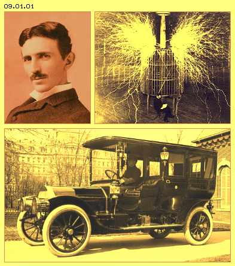
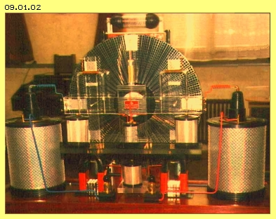

Nikola Tesla
Zivilisation in der heutigen Form könnte es nicht geben ohne Elektrizität. Ohne Nikola Tesla (1856 bis 1943) gäbe es wohl kaum diese Elektrotechnik, weil auch heute noch praktisch alle Geräte auf seinen Experimenten und Patenten beruhen. Zurecht gilt er als größtes Erfinder-Genie der Neuzeit. Seltsamer Weise ist das heute nicht allgemein bekannt. Bestenfalls weiß man von irgend einer physikalischen ´Tesla´-Einheit. Oder man kennt eine ´Tesla-Spule´ und diesen stolzen Mann, der seelenruhig inmitten der sprühenden Funken sitzt (siehe Bild 09.01.01 oben). In der ´Szene Freier Energie´ dagegen kennt man seinen Lebenslauf und seine revolutionären Erfindungen sehr wohl.

Nach Teslas Überzeugung ist die Atmosphäre voller ´radiations´, die mittels geeigneter Antennen zu nutzen seien. Tesla sprach oft über diese neue Form von Energie, die man heute als ´Vakuum-, Raum- oder Zero-Point-Energie´ bezeichnet - und noch immer nicht exakt definieren kann. Tesla sprach von einer anderen Elektrizität und befasste sich viele Jahre mit der Übertragung von Energie rund um den Globus - und man streitet sich noch heute über die Existenz und / oder Eigenschaften der ´Skalar-Wellen´. Auch viele andere Tesla-Experimente und -Patente versucht man heute noch vergeblich nachzubauen. Die gängige, auf Tesla beruhende Elektrotechnik ist bekannt - und funktioniert überall. Aber einige seiner Visionen sind noch immer nicht Realität geworden.
Die meisten Tesla-Dokumente sind ´verschollen´, so dass man heute nur die Patentschriften kennt (in welchen wie üblich die entscheidenden Kriterien nicht angesprochen sind). Andererseits hat man Kenntnis aus seinen öffentlichen Demonstrationen und Vorträgen, allerdings nur über die jeweiligen Presse-Berichte. Insofern blieb Nikola Tesla bis heute eine ´geheimnis-umwitterte Erscheinung´, z.B. auch aufgrund von Äußerungen wie diesen:
"Schon früh hatte der Mensch erkannt, dass alle wahrnehmbare Materie von einer Grundsubstanz kommt, einem hauchdünnen Etwas, die jenseits jeder Vorstellung den ganzen Raum erfüllt, dem Akasha oder licht-tragenden Äther, auf den die lebensspendende Prana oder schöpferische Kraft einwirkt, die in nie endenden Schwingungen alle Dinge und Erscheinungen ins Dasein ruft. Die Grundsubstanz, mit ungeheurer Geschwindigkeit in nicht endenden Wirbeln herumgeschleudert, wird zur festen Materie; wenn die Kraft abnimmt, hört die Bewegung auf und die Materie verschwindet wieder und verwandelt sich in die Grundsubstanz zurück ...". Solcher Art äußerte sich Nikola Tesla in vielen Vorträgen und verwies auf zukünftige Möglichkeiten zur Nutzung Freier Energie, beispielsweise in seiner bekanntesten Aussage: "Ehe viele Generationen vergehen, werden unsere Maschinen durch eine Kraft angetrieben, die an jedem Punkt des Universums verfügbar ist".
Einerseits behauptet Tesla also, dass Energie überall und jederzeit aus der Atmosphäre herunter zu laden sei, mit relativ einfachem Gerät. Es bleibt dann einigermaßen unverständlich, dass er sich jahrlang mit der Übertragung von Energien an entfernte Orte befasste. Seltsam ist beispielsweise auch, wenn Tesla einen mystischen Bezug herstellt: "Diese Idee ist nicht neu, wir finden sie in den herrlichen Mythen des Antreus, der Energie aus der Erde ableitet ...". Wer sich im alten Griechenland nicht so gut auskennt: Antreus (Antaios, Antaeus) war der Sohn der Gaia (Mutter Erde) und des Poseidon (Gott des Meeres). Dieser Riese forderte jeden zum Kampfe und besiegte alle. Herkules aber hatte erkannt, das Antreus seine Kraft aus der Erde bezog. Also hob er den Riesen in die Luft und besiegte so den kraftlosen Antreus. Stammt nun Teslas ´neue Energie´ aus der Atmosphäre oder aus der Erde? Mit dieser Frage werden wir uns später intensiv beschäftigen.
Auto-Motor
Nikola Tesla war ein wahres Genie, indem er neuartige Geräte bis ins Detail visualisieren konnte. Wenn er diese nach groben Skizzen bauen ließ, brachten die Maschinen auf Anhieb die gewünschte Leistung. Er musste sich also nicht per try-and-error an Erfindungen heran tasten, sondern wusste immer genau, warum er wozu welche technische Lösung einsetzten wollte. Die oben angedeuteten Widersprüche resultieren sehr wahrscheinlich daraus, dass er spätestens ab 1930 mit ´gespaltener Zunge´ reden musste. In diesem Jahr fuhr er ein Automobil (Pierce-Arrow, siehe Bild 09.01.01 unten) mit einem Elektro-Motor, dessen Strom autonom erzeugt wurde. Glaubhaft bezeugt ist eine Reise über viele Meilen mit beachtlicher Geschwindigkeit. Eine autonome, praktisch kostenlose Energieversorgung für jedermann konnten die Betreiber der gewinnträchtigen Energie-Wirtschaft nicht hinnehmen - und sie hatten ausreichend Möglichkeiten, dass sich Nikola Tesla nurmehr mit ´Randproblemen´ befassen durfte.
Wenn Tesla sagte "... Ehe viele Generationen vergehen, werden unsere Maschinen ...", sprach er von seiner bereits erprobten Technik. Deren Leistung war den ´Entscheidungs-Trägern´ sehr wohl bekannt. Tesla vermutete zurecht, dass es allerdings einige Generationen dauern würde, bis Freie Energie durch die Mächtigen frei gegeben würde. Ähnliche Erfahrungen mussten viele andere Erfinder machen, sobald sie voll taugliche Maschinen vorweisen konnten. Bis heute hat sich daran nichts geändert. Andererseits haben derzeitige Krisen gravierende Änderungen hervor gebracht. In wenigen Jahren wird die Welt-Wirtschaft durch China und Indien dominiert. Beide Länder haben kaum konventionelle Energieträger, aber beide ersticken in Umweltproblemen. Insofern könnte saubere, freie Energie bald real angewendet werden.
Freie Energie

Derzeit ist nur ein autonomer Generator bekannt, der in der Schweiz seit Jahren zur Stromversorgung einer religiösen Gemeinde dient. Allerdings blieb die Funktionsweise dieser ´Testatika´ (Bild 09.01.02) unbekannt - aus ´ethischen´ Gründen. Vermutlich gibt es dutzend Lösungen zur Realisierung Freier Energie - sobald die ersten Maschinen am Markt ´zugelassen´ werden.
Die Ansätze vieler Erfinder und Forscher sind in einschlägigen Kreisen wohl bekannt, z.B. die Namen von Aspden, Bedini, Bearden, Camus, Coler, Gray, Hubbard, Joe, Kelly, Marinov, Meyers, Miller, Moray, Plauston, Tilly und einige mehr. Ihre Geräte arbeiteten teilweise schon wirklich effektiv. Im Gegensatz zu Tesla wurden diese Lösungen aber meist per try-and-error gefunden oder funktionieren nicht permanent. Auch die Testatika ist vermutlich viel zu komplex konstruiert, weil selbst der Erfinder Baumann die entscheidenden Prozesse nicht wirklich kennt. Oftmals werden geradezu esoterische Gründe genannt für die Funktionsweise einer Konstruktion bzw. man kennt schlicht und einfach nicht die zugrunde liegende Energie des ´Vakuums´.
Zielsetzung
Mit dieser ´Äther-Elektro-Technik´ möchte ich dieses Problem angehen, indem ich die bekannten, bislang abstrakten Modellvorstellungen von Ladung, Strom, Feldern, Kräften usw. zurück führe auf ganz konkrete Bewegungsmuster der vollkommen realen Äther-Substanz. Damit könnten die Wirkungen bereits vorliegender Ansätze diverser Erfinder erklärt werden. Wenn der Wirk-Mechanismus des Äthers bekannt ist oder die Bewegungs-Modelle einigermaßen realitäts-konform sind, wird man effektivere Geräte konzipieren können.
Zielsetzung dieser Arbeit ist nicht der Bau solcher Maschinen - wobei ich selbst noch nicht einmal die Fähigkeit zum Bau simpler Experimente habe. Ich kann vielmehr nur rein theoretisch neuartige Überlegungen anbieten, basierend auf meinem Verständnis des Äthers. Ob diese Vorschläge dann von anderen aufgegriffen, durch Experimente belegt oder gar taugliche Geräte daraus entwickelt werden - ist außerhalb meiner Einflussmöglichkeiten.
Vorgehensweise
Die Definition und Eigenschaften ´meines´ Äthers wurden in früheren Teilen detailliert beschrieben, besonders im vorigen Teil 08. ´Etwas in Bewegung´. Nur einige relevante Gesichtspunkte werden noch einmal kurz angesprochen (Äther-Substanz, Freier und Gebundener Äther, Schwingen, Schlagen, Driften, allgemeiner Ätherdruck). Danach werden einige elementare Bewegungs-Einheiten nochmals angeführt (Photon, Elektron, Atom, Moleküle, Aura, Membranen).
Als neue Themengebiete sind einige generelle elektrische Erscheinungen zu erläutern (Ladung, Strom, Stromrichtung, Gleich- und Wechselstrom, Erd-Elektrizität, Quelle und Senke). Danach können relevante Komponenten diskutiert werden (Kondensator, Spulen, Trafo, Induktion, Gleichrichter, Magnete, Elektro-Generator und -Motor).
In der Elektro-Technik wurden unzählige Varianten von Elementen, Schaltungen und Geräten gebaut, so dass kaum noch wirklich Neues zu erfinden sein wird. Hier nun werden die Erscheinungen der Elektrizität exklusiv auf konkrete Bewegungsmuster des Äthers zurück geführt - und es wird sich zeigen, ob darauf basierend effektivere Maschinen zu gestalten sind. Auf jeden Fall sollten sich plausible Erklärungen ableiten lassen zur wahren Ursache der Arbeitsweise der oben angesprochenen Erfindungen. Möglicherweise könnten einige dieser Geräte gezielt darauf ausgelegt werden - so meine vage Hoffnung und Zielsetzung.
Laienhaft / wissenschaftlich
Mir ist durchaus bewusst, dass dies ein anmaßendes Unterfangen ist - andererseits wurde diese Problematik noch nie wirklich konsequent aus der Sicht des Äthers angegangen. Ich habe keine naturwissenschaftliche Ausbildung und kann mich noch nicht einmal präzise in Fachbegriffen ausdrücken. Andererseits definiere ich stets exakt die von mir verwendeten Begriffe, meist abweichend vom generellen Verständnis. Mangels Kenntnissen kommt es durchaus vor, dass ich etwas ´erfinde´ und viel später erst erfahre, dass diese Sache längst bekannt ist. Das ist für mich eine Bestätigung, dass gelegentlich meine Überlegungen durchaus richtig sind.
Ich bitte alle Leser um Entschuldigung, dass ich keine wissenschaftlich korrekten Zitate bringen kann. Heute ist es viel sinnvoller, in Suchmaschinen des Webs irgendwelche Fragen zu stellen und man bekommt umgehend beliebig viele Informationen zur Problemstellung. Ich benenne auch kaum Zitate, weil ich immer nur von allgemein bekannten Sachverhalten ausgehe. Daraus leite ich dann Konsequenzen ab und beschreibe diese bestmöglich mit meinen Worten. Für Fachleute mögen die Überlegungen absurd erscheinen. Oft erscheinen diese Darstellungen zunächst unverständlich, allein weil die Gesichtspunkte total neu sind - eben so wie nur ein ´unbedarfter Laie´ denken kann. Andererseits werden einige Leser diese Gedankengänge genießen und den Eindruck gewinnen, erstmals zu verstehen was Elektrizität wirklich ist.
Meine Ausführungen sind auch insofern unwissenschaftlich, dass ich keine Formeln bringe und keine Berechnungen anstelle. Ich kann lediglich diese primitiven Zeichnungen anfertigen, kann nur prinzipielle Grund-Schaltungen skizzieren und ich kann schon gar keine Bauanleitungen erstellen. Meine Ausführungen zu dieser Äther-Elektro-Technik sind also rein theoretischer Natur, nur laienhafte Überlegungen, allerdings aus Sicht eines neuen Äther-Verständnisses - und darum möglicherweise oder sehr wohl geeignet, neues Wissen zu schaffen.
Haftungs-Ausschluss
Diese Dokumente werden nur zum Zwecke der Information publiziert. Sollte jemand Experimente auf Basis dieser Informationen ausführen und irgend eine Person oder Sache dabei beschädigt werden, bin ich nicht verantwortlich. Es ist allgemein bekannt, dass Experimente besonders mit Hochvolt-Schaltungen extrem gefährlich sind. Jegliche Haftung ist auch ausgeschlossen bei der Nutzung von Geräten, die auf diesem Äther-Verständnis der Elektro-Technik basieren. Für jeglichen Schaden bei der Nutzung dieser Erkenntnisse sind ausschließlich die Hersteller oder Nutzer von Geräten verantwortlich.